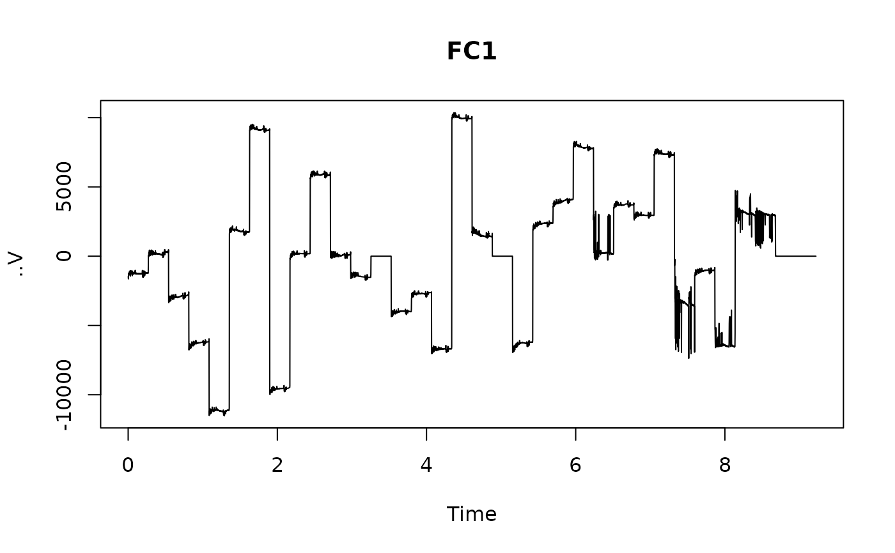

Read 'BrainVision' data
Usage
read_brainvis(
file,
extract_path = getOption("ieegio.extract_path", NULL),
header_only = FALSE,
cache_ok = TRUE,
verbose = TRUE
)Arguments
- file
file path to the data file
- extract_path
location to where the extracted information is to be stored
- header_only
whether to only load header data
- cache_ok
whether existing cache should be reused; default is
TRUE. This input can speed up reading large data files; set toFALSEto delete cache before importing.- verbose
whether to print processing messages; default is
TRUE
Value
A cached object that is readily to be loaded to memory; see
SignalDataCache for class definition.
Examples
if( ieegio_sample_data("brainvis.dat", test = TRUE) ) {
# ensure the header and marker files are downloaded as well
ieegio_sample_data("brainvis.vhdr")
ieegio_sample_data("brainvis.dat")
file <- ieegio_sample_data("brainvis.vmrk")
x <- read_brainvis(file)
print(x)
x$get_header()
x$get_channel_table()
x$get_annotations()
channel <- x$get_channel(10)
plot(
channel$time,
channel$value,
type = "l",
main = channel$info$Label,
xlab = "Time",
ylab = channel$info$Unit
)
}
#> <ieegio::BrainVisionCache>
#> Cached channels : 1-34
#> Original format : BINARY (n=34)
#> Sample rate : 512.0
#> Channel comments:
#> Each entry: Ch<Channel number>=<Name>,<Reference channel name>,
#> <Resolution in "Unit">,<Unit>, Future extensions...
#> Fields are delimited by commas, some fields might be omitted (empty).
#> Commas in channel names are coded as "\1".
#> Annotation comments:
#> Each entry: Mk<Marker number>=<Type>,<Description>,<Position in data points>,
#> <Size in data points>, <Channel number (0 = marker is related to all channels)>,
#> <Date (YYYYMMDDhhmmssuuuuuu)>, Visible
#> Fields are delimited by commas, some fields may be omitted (empty).
#> Commas in type or description text are coded as "\1".
